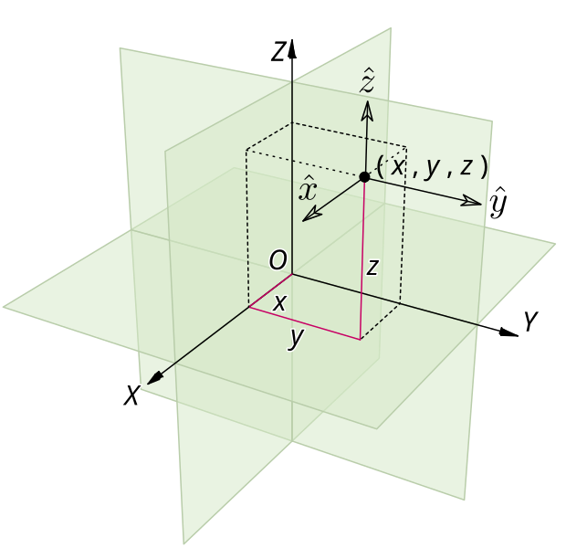

This module provides geometry compression and decompression utilities used internally within
SceneModel.createGeometry. These functions are exposed publicly,
allowing users to pre-compress geometry data before passing it to
SceneModel.createGeometryCompressed for optimized rendering and storage.
Compression Techniques
The utilities in this module utilize the following compression techniques to reduce the size of 3D geometry data:
Merges duplicate vertex positions and updates indices to minimize data redundancy
Generates edge indices for triangle meshes to facilitate faster rendering
Omits normals (which are auto-generated by shaders during rendering)
Converts positions to relative-to-center (RTC) coordinates for improved compression efficiency
Quantizes positions and UVs as 16-bit unsigned integers for compact storage
Compresses bounding box data and provides necessary matrices for efficient decompression
Installation
npminstall@xeokit/sdk
Usage
The following examples demonstrate how to use the compression functions in this module:
1. Compressing Positions with AABB3 (Axis-Aligned Bounding Box)
To compress a set of vertex positions, use the compressPositions3 function, which quantizes the positions based on an AABB3:

xeokit Geometry Compression / Decompression Utilities
This module provides geometry compression and decompression utilities used internally within SceneModel.createGeometry. These functions are exposed publicly, allowing users to pre-compress geometry data before passing it to SceneModel.createGeometryCompressed for optimized rendering and storage.
Compression Techniques
The utilities in this module utilize the following compression techniques to reduce the size of 3D geometry data:
Installation
Usage
The following examples demonstrate how to use the compression functions in this module:
1. Compressing Positions with AABB3 (Axis-Aligned Bounding Box)
To compress a set of vertex positions, use the
compressPositions3function, which quantizes the positions based on an AABB3:2. Decompressing 3D Positions with a 4x4 Matrix
To decompress a set of quantized positions using a transformation matrix, use the
decompressPositions3WithMat4function:3. Compressing UV Coordinates
The
compressUVsfunction compresses UV coordinates using a similar approach to position compression:4. Decompressing 3D Position with AABB3
To decompress a point from quantized data back into real-world coordinates, you can use
decompressPoint3WithAABB3: